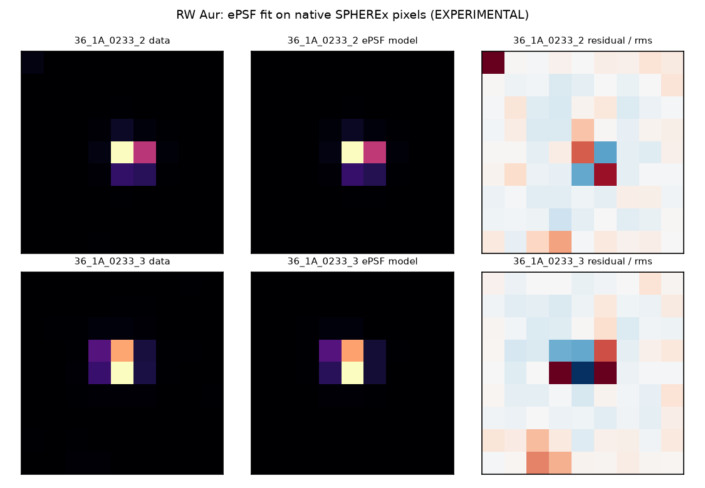
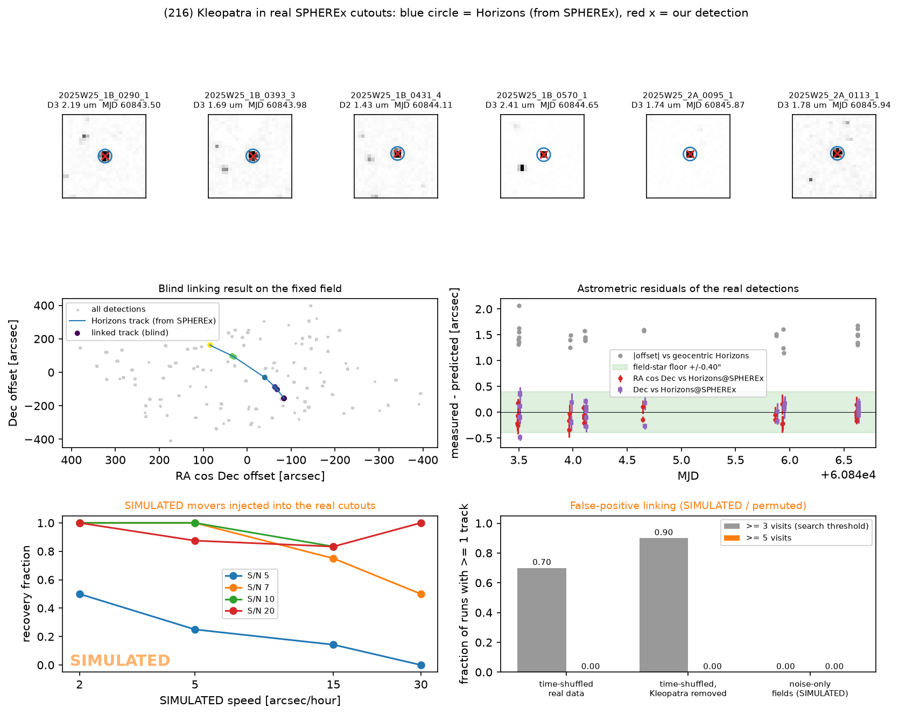

HIPPARCHUS does not just show the difference between two SPHEREx images. It checks whether the difference can be
interpreted (same detector, same wavelength, clean pixels), challenges the result with other reasonable analysis
choices, and keeps the evidence back to the NASA archive. Three real cases, precomputed from cached SPHEREx cutouts,
so nothing here waits for a live archive download.
See it in 29 seconds
The film uses real screen recordings of the app and real SPHEREx images. English captions.
OBSERVEFind every SPHEREx epoch of the field in IRSA (DR1 + QR3) and read the wavelength at the star.RW Aur: 56 epochs on detector 1 · Barnard: 58 epochs on detector 6
VERIFYCompare only same detector, |Δλ| ≤ half a channel, no flagged pixel on the star.Barnard: 0 of 58 epochs usable (OVERFLOW/BLOOM flags) → rejected · RW Aur: 8 of 1540 pairs pass
CHALLENGERepeat with other apertures, sky annuli, masks, calibration, wavelength rules; drop each pair.RW Aur “×1.5 at ≥5σ”: holds 24/24 → robust · “brighter in every pair”: 18/24 → sensitive
EXPLAINReport the result with its formal and systematic uncertainty, limitations and evidence chain.175σ formal → ≈12σ with the 12.5% field-star calibration floor; binary unresolved
Second, independent measurement (EXPERIMENTAL, not used for the results above)
The SPHEREx effective PSF stored in each cutout is fitted to the star's own pixels, with no reprojection.
RW Aur: 8/8 pairs agree with the aperture ratios
(largest difference 1.8%); every pair still ≥5σ. Label: SUPPORTED VARIABILITY.
WISE 0855: too faint to compare ratios; no pair reaches 5σ with the ePSF either
(largest 3.1σ). Label: INCONCLUSIVE.
Barnard's Star: not fitted, no usable epoch. Label: INSUFFICIENT DATA.
SIMULATED stars on 104 blank spots of real cutouts: error bars right to
7%, 0 false ≥5σ detections.
Limits: the fit leaves residuals at the core of bright stars (χ²ν 4–18), and both
methods read the same photons; SIMULATED stars show their errors are only weakly correlated at S/N 10–50,
and the agreement holds after that correction. Labels follow a fixed rule; they are not probabilities.
Why χ² is high: we checked normalisation, all 8 orientations, zone choice, background
and pixel noise; they are fine. The causes are Gaia field stars at the box edge and extra real sky structure in the
RW Aur field (fitting them takes the median from 7.4 to 3.2), plus a core mismatch we could not attribute. No fix
moves the RW Aur ratios by more than 2%, so the ePSF stays an experimental cross-check.

Wavelength audit against the official calibration
We compared the wavelength our pipeline reads at each star with the official SPHEREx CWAVE/CBAND
maps (cal-swcs-v5-2026-191). The audit found a real issue: astropy applies the image's distortion
terms to the wavelength lookup too, shifting it by up to ~18 nm on WISE 0855. Re-running every pair with the calibrated
wavelengths:
Target
Published: pairs · largest |σ|
Calibrated: pairs · largest |σ|
Pairs that change
RW Aur
8 · 175.08σ
8 · 175.08σ
0
WISE 0855
27 · 1.93σ
28 · 2.05σ
5
Barnard's Star
0 · —
0 · —
0
No published conclusion changes. We keep the published numbers for reproducibility and say so here.
Cause, proven on 280 cutouts: the SIP keywords belong to the sky (RA/Dec) solution, but astropy also attaches
them to the wavelength lookup table, which is then read 3–71 pixels away from the star. With SIP removed, the table
agrees with the official maps to under 1 nm (median), as IRSA's own tutorials recommend. The pipeline now offers a
cwave mode that reads the official CWAVE/CBAND maps; the legacy mode stays for
reproducibility. The same audit
confirmed the ePSF zone layouts (21×21; detector 3: 11×41). Evidence
Moving-Object Explorer (validation on a known asteroid, not a discovery)
A distant planet would show up as something that moves between SPHEREx epochs. Before looking for unknown
movers, we checked that our detection, linking and astrometry work on a known one: the main-belt asteroid
(216) Kleopatra in 38 real SPHEREx exposures, 2025-06-17 to
2025-06-20.
Check
Result
Blind linking
1314 detections, 1248 stationary;
Kleopatra linked from 31 detections over 7 visits
Position vs JPL Horizons (seen from SPHEREx)
0.15″ / 0.18″ rms
(RA cos Dec / Dec); vs geocentric Horizons 1.34″ / 0.63″: we see SPHEREx's own parallax
Rate (″/h)
2.0767, 4.3102 ± 0.0037 vs Horizons 2.0771,
4.3075 (-0.12σ, +0.74σ)
SIMULATED movers, S/N ≥ 7, 2–15″/h
75–100% recovered
False links (SIMULATED / permuted)
noise-only fields: 0/10 runs with a track;
shuffled epoch times: 14/20 runs with a 3-visit track, none with 5 visits
Found along the way: the SPHEREx pipeline flags the moving asteroid as OUTLIER in
35 of 38 exposures, so a static-star mask erases it.
The motion check keeps OUTLIER pixels; the star pipeline is unchanged.
The second track is not a mover: its 6 detections sit at 3 fixed positions: two faint Gaia/AllWISE stars
(G 18.4 and 19.4) and one single-exposure detector hit. JPL finds no known object within 100″. A new degenerate-track
check flags it (follow-up evidence).
Limits: one object, one 3.3-day window, slow motion only. Further known-asteroid cases (Tamriko, Eros) were
found but not run: IRSA returned HTTP 502. 3-visit tracks can be chance alignments.
HIPPARCHUS has not found Planet X.

Evidence: motion_check.json
· reproduce with backend/scripts/reproduce_motion.py
Why this matters for “Planet X and SPHEREx”
SPHEREx sees every part of the sky many times, each time at a slightly different wavelength. A distant moving
or changing object is found by comparing those epochs, and most apparent differences are instrumental: wavelength
changes along the linear variable filter, saturation, flags, zodiacal light. HIPPARCHUS is the step that decides
whether two epochs can be compared at all, and how far a measured difference can be trusted.
Implemented and tested
Multi-epoch search of real SPHEREx DR1/QR3 data, with checksums and DOIs
Compatibility decision per pair (detector, wavelength, flags) with the reason for every refusal
Brightness change with formal and systematic errors, control star, robustness checks
Astrometric check: centroid shift between epochs per pair (RW Aur 0.14–0.78″, well under a 6.15″ pixel)
and proper-motion propagation of catalogue positions (Barnard's Star, 10″/yr)
Future research (not done)
Searching many fields for unknown movers (our moving-object check below is validated on one known asteroid only)
Separating blended stars with a joint PSF fit (our ePSF fit below is a single-source check only)
Calibrating against many field stars with larger cutouts
HIPPARCHUS has not found Planet X or any new object.
RW Aurigae Measured variability
RW Aur is 2.56× brighter one year later at the same wavelength (0.763/0.770 µm). All 8 valid pairs point the same way; the control star stays within 0.86–1.07.
Observed
RA 76.956°, Dec 30.401°, SPHEREx-D1 56 epochs found, 18 usable
2025-09-01 → 2026-09-09
Pair shown: 2025W36_1A_0233_3 → 2026W37_1A_0234_3 (the largest |σ|). Real SPHEREx cutouts, later epoch reprojected onto the earlier one; crosshair = target.
dates (a → b)
λ µm
S/N a / b
flux ratio
σ formal
σ with calibration floor*
control star
2025-09-02 → 2026-09-08
0.763/0.770
178 / 370
×2.56
+175.1
+12.4
×0.86
2025-09-02 → 2026-09-08
0.745/0.752
200 / 354
×2.50
+173.5
+12.0
×1.07
2026-03-10 → 2026-09-08
0.774/0.770
246 / 351
×1.50
+84.8
+4.0
×0.89
2025-09-02 → 2026-03-08
0.763/0.757
178 / 299
×1.67
+84.4
+5.3
×0.90
2026-03-08 → 2026-09-08
0.757/0.752
282 / 363
×1.42
+80.3
+3.4
×0.97
2025-09-02 → 2026-03-08
0.745/0.739
200 / 275
×1.62
+80.3
+4.9
×0.95
2025-09-02 → 2026-03-10
0.781/0.774
200 / 260
×1.41
+55.0
+3.2
2025-09-03 → 2026-03-04
0.878/0.878
311 / 331
×1.09
+18.5
+0.7
* Formal error plus the field-star calibration floor; blank where no floor could be measured (fewer than 3 pairs with reference stars). Blank control star: none passed the criteria in that pair.
Uncertainty
Each σ is the formal error from the SPHEREx variance planes, propagated through sky subtraction and reprojection (checked: blank-sky null test spread 0.91, ideal 1). A calibration floor of 12.5% from field stars is shown separately. With 8 pairs tested, the chance of any false 5σ event is 4.6e-06 if the tests were independent with Gaussian errors. They are not fully independent (pairs share epochs), so this is a rough guide; formal σ values also leave out calibration systematics.
Challenged: stability fingerprint
robust brightened by at least x1.5 at >= 5 sigma in some pair (24/24 checks)
sensitive every valid pair brighter later, at least one >= 5 sigma (18/24 checks)
aperture px \ sky annulus px
3.5–6.0
4.0–7.0
5.0–8.0
1.5
×2.43 189.6σ
×2.43 179.0σ
×2.43 180.6σ
2.0 (used)
×2.56 201.8σ
×2.56 175.1σ
×2.56 178.6σ
2.5
×2.58 198.1σ
×2.58 160.5σ
×2.58 160.1σ
3.0
×2.58 191.4σ
×2.58 136.6σ
×2.58 136.1σ
Cells test “brightened by at least x1.5 at >= 5 sigma in some pair”: green holds, red fails, grey = some pair not measurable. Value: strongest ratio and largest formal |σ| (no calibration floor). Labels follow a fixed rule (robust = all checks, sensitive = at least half); they are not probabilities.
Limitations
The 175σ value is the formal statistical significance. With the 12.5% calibration floor measured from field stars it is at most 12.4σ; the size of the change (×2.5) is the robust result.
SPHEREx pixels are 6.15″, so the aperture holds both stars of the RW Aur binary (1.6″ apart) and a faint G = 18.8 star: this is the combined light of the system.
The field-star calibration uses only 0–2 reference stars per cutout, so the 12.5% floor is itself uncertain.
“Brighter in every pair” is sensitive: it fails with a 1.5 px aperture. “At least ×1.5 at ≥5σ” holds in every check.
RW Aur is a known variable young star: a measurement, not a discovery.
All 58 epochs are saturated or flagged at the star. HIPPARCHUS refuses to compare instead of reporting a fake change.
Observed
RA 269.4463°, Dec 4.7667°, SPHEREx-D6 58 epochs found, 0 usable
2025-08-15 → 2026-08-20
Verified
0 valid pairs (same detector, |Δλ| ≤ half a channel, clean pixels).
Refused: wavelength mismatch 1579, flagged pixels 1653, bad variance 57, nan pixels 57.
Comparison
2026W12_2A_0520_3
One real epoch (flagged pixels marked). Reasons recorded for this epoch: Pixels on the target are flagged: BLOOM (6 px), OVERFLOW (2 px), SUR_ERROR (2 px), TRANSIENT (4 px).
Uncertainty
No measurement, so no uncertainty: the comparison is refused.
Challenged: stability fingerprint
No stability grid: there is no valid pair to vary the settings on.
Limitations
Refused because every epoch is saturated or flagged at the star in detector 6; this is a property of the data, not of our settings.
Barnard's Star moves 10″ per year (1.7 px), so the preset position is propagated; the catalogue match puts it 0.88 px from SIMBAD.
In 27 valid pairs no change reaches 5σ (largest |σ| = 1.9). The target is faint (S/N 0.1–5.2 per epoch), so this means no change was detected at this sensitivity, not that the brightness is constant.
Observed
RA 133.76°, Dec -7.2424°, SPHEREx-D6 45 epochs found, 37 usable
2025-05-05 → 2026-05-11
Pair shown: 2025W46_1A_0238_1 → 2026W17_1B_0634_2 (the largest |σ|). Real SPHEREx cutouts, later epoch reprojected onto the earlier one; crosshair = target.
dates (a → b)
λ µm
S/N a / b
flux ratio
σ formal
σ with calibration floor*
control star
2025-11-10 → 2026-04-23
4.629/4.644
5 / 3
n/a (S/N<5)
-1.9
2025-11-10 → 2026-04-22
4.510/4.510
2 / 4
n/a (S/N<5)
+1.4
2025-05-05 → 2025-11-14
4.967/4.979
1 / 3
n/a (S/N<5)
+1.3
2025-11-14 → 2026-05-11
4.979/4.967
3 / 2
n/a (S/N<5)
-1.2
2025-12-12 → 2026-04-23
4.629/4.644
5 / 3
n/a (S/N<5)
-1.1
2025-11-10 → 2025-12-12
4.629/4.629
5 / 5
n/a (S/N<5)
-1.0
2026-04-26 → 2026-05-08
4.815/4.825
2 / 1
n/a (S/N<5)
-1.0
2025-11-14 → 2026-05-08
4.836/4.825
3 / 2
n/a (S/N<5)
-1.0
2025-05-05 → 2025-11-14
4.860/4.871
2 / 3
n/a (S/N<5)
+1.0
2026-04-30 → 2026-05-08
4.825/4.825
4 / 2
n/a (S/N<5)
-1.0
2025-11-10 → 2026-04-21
4.444/4.447
4 / 3
n/a (S/N<5)
-0.9
2025-05-05 → 2026-05-09
4.860/4.860
2 / 3
n/a (S/N<5)
+0.8
2025-11-10 → 2025-11-10
4.611/4.629
4 / 5
n/a (S/N<5)
+0.8
2025-11-14 → 2026-04-26
4.801/4.815
3 / 3
n/a (S/N<5)
-0.6
2025-11-10 → 2026-04-22
4.576/4.578
4 / 5
n/a (S/N<5)
+0.6
2025-05-05 → 2026-05-11
4.967/4.967
1 / 2
n/a (S/N<5)
+0.5
2026-04-26 → 2026-05-09
4.932/4.931
1 / 2
n/a (S/N<5)
+0.5
2025-11-14 → 2026-04-26
4.943/4.932
2 / 2
n/a (S/N<5)
-0.4
2025-11-10 → 2025-12-12
4.611/4.629
4 / 5
n/a (S/N<5)
+0.3
2025-11-14 → 2026-04-26
4.767/4.780
1 / 2
n/a (S/N<5)
+0.3
2026-04-26 → 2026-05-09
4.895/4.895
0 / -0
n/a (S/N<5)
-0.3
2025-11-14 → 2026-05-09
4.871/4.860
3 / 3
n/a (S/N<5)
-0.2
2025-11-14 → 2026-04-30
4.836/4.825
3 / 3
n/a (S/N<5)
-0.2
2026-04-26 → 2026-04-30
4.815/4.825
2 / 2
n/a (S/N<5)
-0.1
2025-11-10 → 2026-04-21
4.412/4.414
3 / 4
n/a (S/N<5)
+0.1
2025-11-10 → 2026-04-23
4.611/4.609
4 / 4
n/a (S/N<5)
-0.0
2025-11-14 → 2026-05-09
4.943/4.931
2 / 2
n/a (S/N<5)
-0.0
* Formal error plus the field-star calibration floor; blank where no floor could be measured (fewer than 3 pairs with reference stars). Blank control star: none passed the criteria in that pair.
Uncertainty
Each σ is the formal error from the SPHEREx variance planes, propagated through sky subtraction and reprojection (checked: blank-sky null test spread 0.91, ideal 1). With 27 pairs tested, the chance of any false 5σ event is 1.5e-05 if the tests were independent with Gaussian errors. They are not fully independent (pairs share epochs), so this is a rough guide; formal σ values also leave out calibration systematics.
Challenged: stability fingerprint
robust no pair changes by >= 5 sigma (34/34 checks)
aperture px \ sky annulus px
3.5–6.0
4.0–7.0
5.0–8.0
1.5
2.8σ
2.8σ
2.7σ
2.0 (used)
1.9σ
1.9σ
1.6σ
2.5
2.4σ
2.0σ
1.7σ
3.0
1.6σ
1.7σ
1.3σ
Cells test “no pair changes by >= 5 sigma”: green holds, red fails, grey = some pair not measurable. Value: largest formal |σ| (no calibration floor). Labels follow a fixed rule (robust = all checks, sensitive = at least half); they are not probabilities.
Limitations
Faint target (median S/N ≈ 2.7 per epoch): “no change” means no change above about 5σ of these errors, not that the object is constant.
No field star passes the reference-star criteria in these cutouts, so no calibration floor could be measured.
Only 4 settings keep every pair measurable; the claim holds in all 4 and in every leave-one-out and wavelength-rule check.
A G = 16.3 field star lies 6.8″ away, inside the aperture.